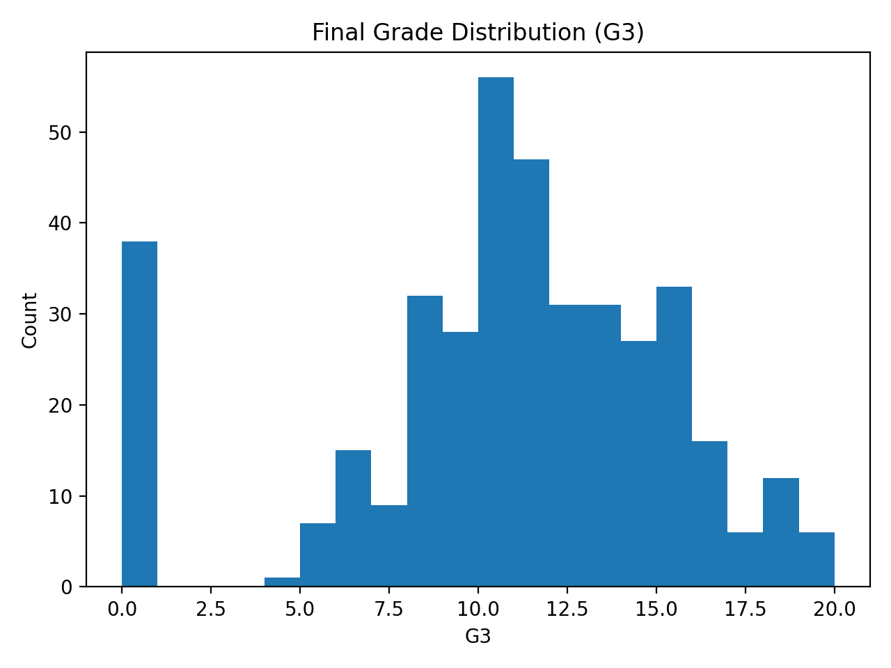
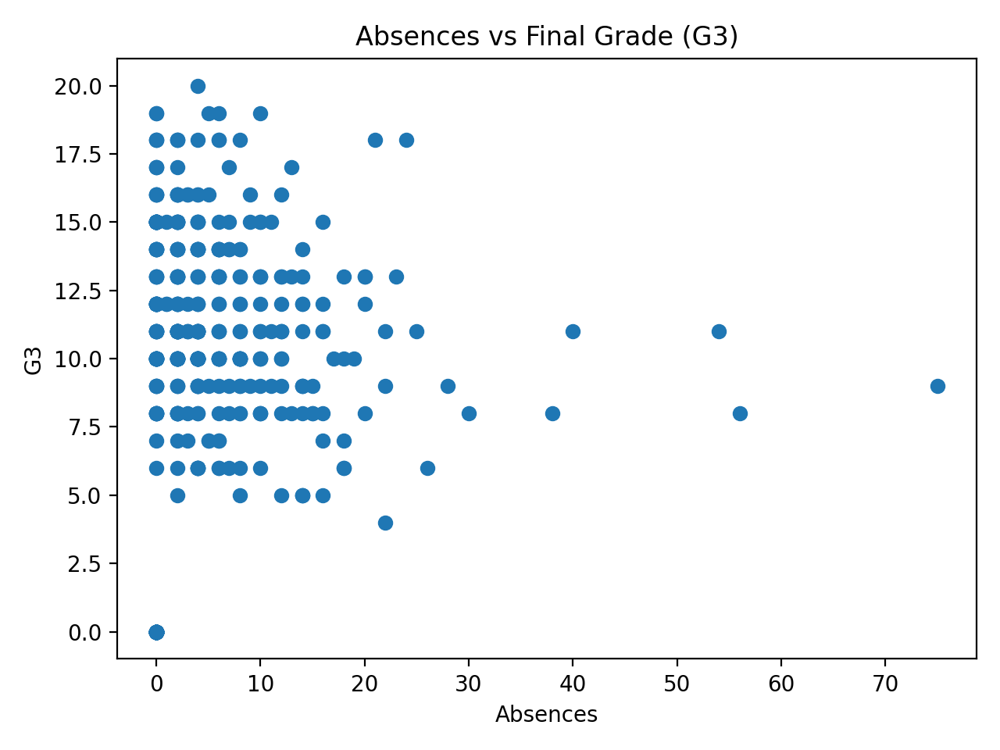
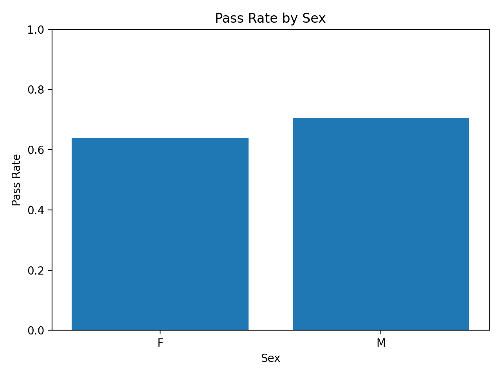
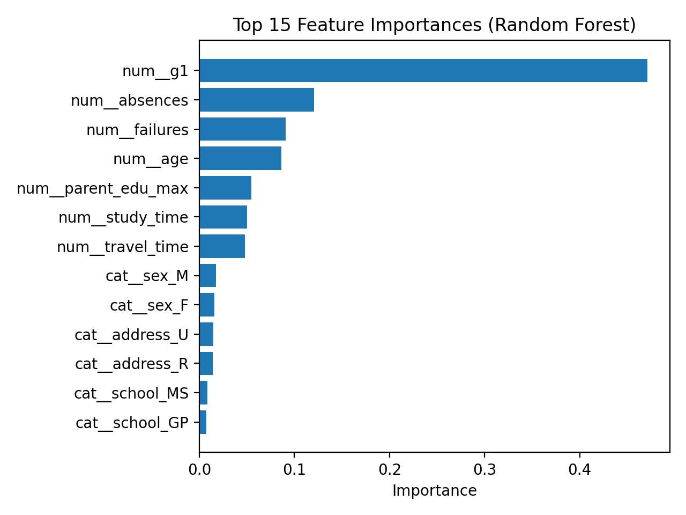

Early identification of students at academic risk is a core component of learning analytics and institutional assessment. This project builds a reproducible analytics pipeline to predict whether a student will pass or fail based on information available prior to course completion.
The workflow demonstrates skills aligned with assessment and analytics work: data preparation, SQL database management, statistical modeling, supervised machine learning, visualization, and reporting.
This analysis uses the public UCI student performance dataset (N = 395). Key variables include demographics (e.g., sex, age, school), engagement (e.g., absences, study time, prior failures), and early academic performance (G1).
pass_fail (1 = G3 ≥
10, 0 = G3 < 10)
The dataset was loaded into a relational SQLite database with three
tables: students, engagement, and
outcomes. SQL joins were used to create the modeling
dataset and to compute assessment-style KPIs.
Visualizations were generated using matplotlib to explore performance distribution and engagement patterns. These plots reflect common reporting outputs in learning analytics contexts.




Two supervised learning models were trained to predict
pass_fail:
Performance was evaluated using ROC-AUC on the test set. ROC-AUC measures how well the model separates students who pass versus fail (0.50 = random, 1.00 = perfect).
| Model | ROC-AUC (Test Set) | Interpretation |
|---|---|---|
| Logistic Regression | 0.905 | Strong discrimination; interpretable relationships between predictors and pass/fail. |
| Random Forest | 0.880 | Strong performance; useful for identifying key predictive signals via feature importance. |
Both models achieved strong predictive performance. Logistic regression slightly outperformed the random forest, which suggests that the relationship between predictors and student success may be largely linear and that an interpretable model may be sufficient for decision support.
Feature importance analysis indicates that the strongest predictors of pass/fail status include:
The results support the feasibility of an early-warning approach that uses early performance and engagement signals to identify students who may benefit from timely support. In an institutional context, these results could inform:
The project is structured as a reproducible workflow with clear separation of data, SQL schema/queries, processing scripts, model outputs, and report artifacts.
src/build_db.py creates the SQLite database from raw CSV
src/eda.py generates descriptive statistics and EDA plots
src/train_model.py trains models, evaluates ROC-AUC, and
saves metrics/feature importance plots
outputs/ (figures and metrics JSON)
This project demonstrates applied learning analytics using SQL and Python for data preparation, modeling, evaluation, and reporting. The strong ROC-AUC results indicate that early academic performance and engagement variables can provide meaningful predictive signal for student success.